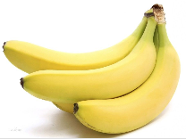
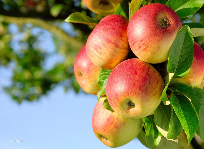

There are lots of different kinds of fruit - there are over 500 varieties of banana alone. By the time we add the countless types of apples, oranges, and other well-known fruit, we are faced with thousands of choices.  One of the most interesting aspects of fruit is the variety available in each country. I live near London, in an area which is known for its apples.  When travelling in Asia, I was struck by how many different kinds of banana were available - many of which had unique flavours and which were only available within a small region. And, of course, there are fruits which are truely unique - I am put in mind of the durian, which is widely consumed in SE Asia and is known as the "king of fruits". The durian is largely unknown in Europe and the USA - if it is known at all, it is for the overwhelming smell, which is compared to a combination of almonds, rotten onions and gym socks.